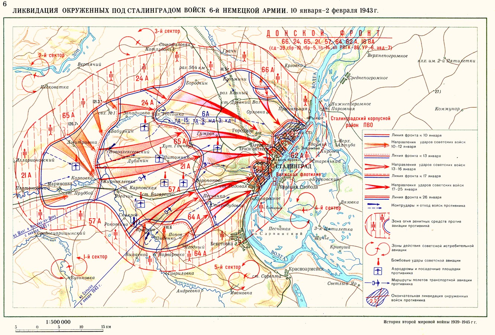

13 января 1943 года
Источник: Волгоградская правда от 14.01.1983 года.
ОТ СОВЕТСКОГО ИНФОРМБЮРО
Вечернее сообщение 13 января.
В заводском поселке наши подразделения, вышедшие на одном участке на западную окраину города, закрепились на достигнутом рубеже и отбивали многочисленные контратаки противника. Уничтожено до 400 немецких солдат и офицеров.
Карта

Бессмертный подвиг.
Растет в далеком Бресте, где у стен крепости разбит парк, клен. Его посадили волгоградцы, участники звездной эстафеты городов-героев, в честь своего земляка Героя Советского Союза Николая Сердюкова.
Родился Н.Ф. Сердюков в 1924 году в селе Гончаровка Октябрьского района в крестьянской семье. В шестнадцать лет стал комсомольцем. С начала 1942 года работал учеником слесаря на «Баррикадах», а в августе добровольно ушел на фронт.
Сегодня исполняется ровно сорок лет с того дня, как совершил свой бессмертный подвиг защитник Сталинграда Николай Филиппович Сердюков.
13 января 1943 года, на четвертый день нашего наступления, 15-я гвардейская стрелковая дивизия настойчиво продвигалась вперед. Н.Ф. Сердюков командовал отделением в блокировочной группе, перед которой стояла задача погасить яростное сопротивление гитлеровцев близ хутора Старый Рогачик. Хутор этот неподалеку от железнодорожной станции Карповской, где раскинулись после войны поля одного из передовых в нашей области совхоза «Советская Россия».
Продвижению к хутору мешали три вражеских дзота, откуда фашисты вели прицельный огонь. Командиры взводов 2-го батальона 44-го гвардейского полка лейтенант В.М. Осипов и младший лейтенант А.С. Белых со связками гранат поползли к дзотам и вывели из строя два из них. Но огнем пулемета из третьего дзота гвардейцы были убиты.
Гибель командиров задержала продвижения наших бойцов. Тогда вперед пополз младший сержант Н.Ф. Сердюков. Затаив дыхание, бойцы следили за ним. Подобравшись к дзоту, он бросил две связки гранат. Но они не долетели до цели. Тогда Николай Сердюков поднялся, бросился вперед и телом своим закрыл амбразуру дзота.
Цепь воинов с грозным «ура» бросилась на позиции гитлеровцев. Боевые соратники бережно подняли еще не остывшее тело Николая Сердюкова, осторожно достали из нагрудного кармана, погибшего клеенчатый сверток. В нем был залитый кровью, принизанный пулями комсомольский билет.
Наше наступление успешно продолжалось. Полк, где служил Н. сердюков, овладел Старым Рогачиком, а 15-я гвардейская дивизия вышла к железной дороге у Станции Карповская.
Комсомольцу Николаю Сердюкову не было тогда и 19 лет. Но его имя стало бессмертным. Его носит одна из улиц Волгограда, школа, профессионально-техническое училище, пионерские дружины. У памятника ему на станции Карповская всегда цветы.